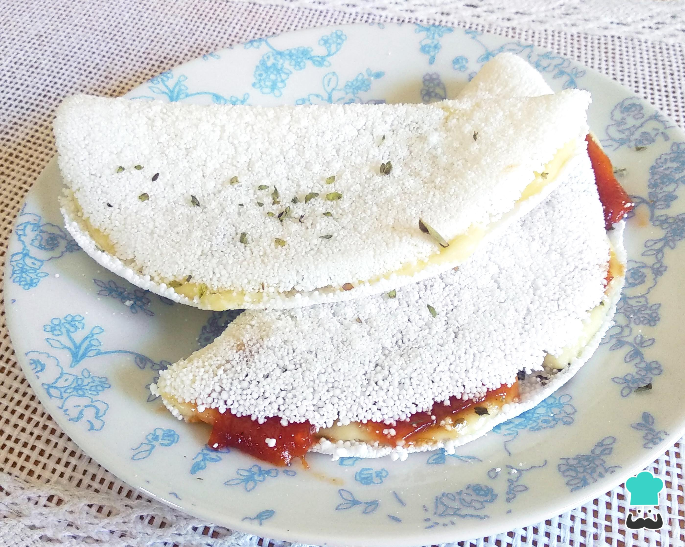
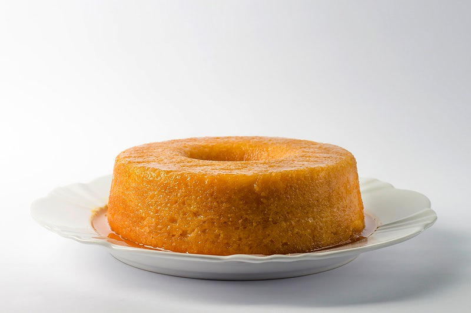

>
Cuscuz Nordestino
INGREDIENTES
- 2 xícaras (chá) de flocos de milho
- 1 xícara (chá) de água
- 1 colher (chá) de sal
- 2 colheres de Manteiga com sal
- Carne seca e vinagrete para acompanhamento
MODO DE PREPARO
- Em uma tigela, hidrate os flocos de milho com água e sal, e deixe descansar por 10 minutos.
- Adicione as 2 colheres de Manteiga com sal e misture bem até ficar soltinho.
- Coloque a mistura na cuscuxeira e leve ao fogo por 15 minutos.
- Desenformw e sirva com carne seca e vinagrete.
MAIS RECEITAS

TAPIOCA RECHEADA

BOLO DE MILHO